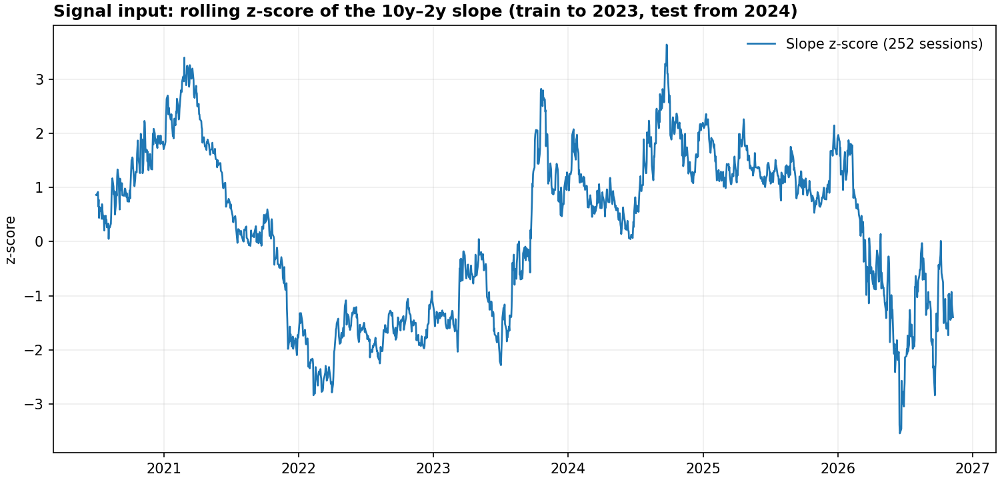

← All studiesSTUDY 03 · PUBLIC DATA
Strategy Research & Backtesting
Completed time-ordered test of a curve-state research signal against a mean baseline.
Not client work. Public-source analysis with stated hypothetical inputs where applicable. Not investment advice.
Observed results
| Train observations | 876 |
|---|
| Test observations | 714 |
|---|
| Train through | 2023-12-29 |
|---|
| Test from | 2024-01-02 |
|---|
| Out-of-sample MAE (bp) | 5.10 |
|---|
| Mean baseline MAE (bp) | 5.09 |
|---|
| Out-of-sample direction hit (%) | 50.14 |
|---|
| Interpretation | forecast diagnostic only; not a tradable strategy or realized return |
|---|

Method
Train a one-variable linear diagnostic on 2020–2023 rolling-standardized 10y–2y slope; evaluate five-session forward slope change on 2024–latest. Compare mean absolute error and direction hit rate to a training-mean baseline.
Source
https://home.treasury.gov/treasury-daily-interest-rate-xml-feed
Limitations
- The target is a yield-curve change, not instrument P&L.
- No transaction costs, execution, risk-adjusted return or tradability claim.
- No hyperparameter search was performed.
Files
Built 2026-11-18 12:12 UTC from local raw inputs under .cache; raw files are excluded from Git.